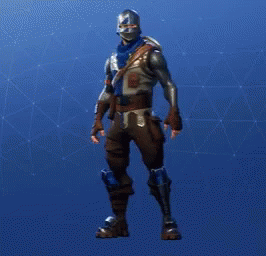

What are Fortnite Dances?
- Fortnite Dances allow the epic gamers to interact with one another while waiting in the pregame lobby or during the battle royale.
- These dances also give the epic gamers the opportunity to try and recreate their favorite Fortnite Dances themselves!
- The numerous epic dances unite the Fortnite Community around the world!
Popular Fortnite Dances:
Names |
Dances |
Fresh |
 |
Best Mates |
 |
Zany |
 |
True Heart |
 |
Other Fortnite Fanpage:
Click Me To Go To Back To First Fortnite Fanpage
Other Facts About Fortnite Dances:
- The Best Mates dance - with its weird swinging arms and high knees - was invented by Marlon Webb on his Vine channel! Since then it's been copied by thousands of people, so it makes sense it would be included in a game as popular as Fortnite.
- The first dance most people ever saw in Battle Royale, this dance was taken from the comedy show 'Scrubs', which was about a group of doctors learning how to save lives. The character Turk did this dance in one episode, and Epic Games decided to pay tribute!
- This dance was originally a street dance done to electro music. It got really popular in Paris and then when some YouTubers decided to show it off. Now it's all over the place - even in Overwatch!
Kyle Malaluan
Period 2
My First Website